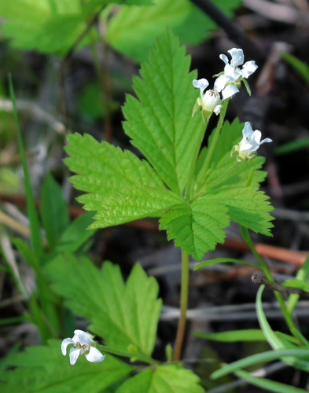
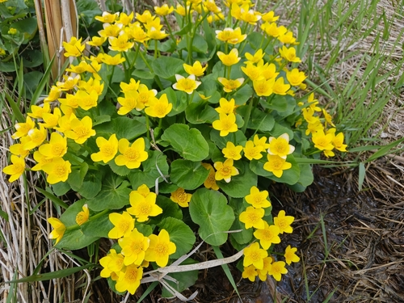
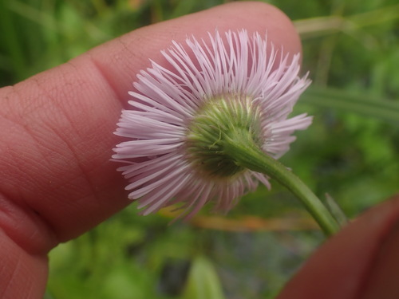
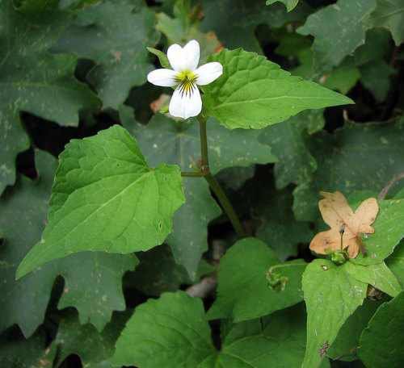
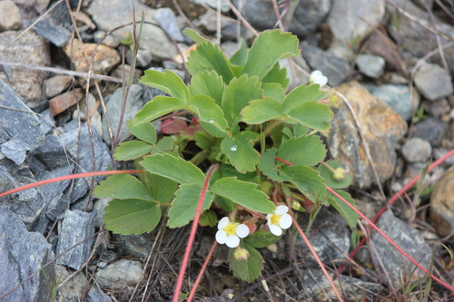

Mustard White
Pieris oleracea butterfly / moth
A NATIVE Pieris, not to be confused with the introduced P. rapae.
13 documented plant relationships.
sips nectar at
 Douglas Goldman, some rights reserved (CC BY-SA), uploaded by Douglas Goldman") BearberryArctostaphylos uva-ursi
BearberryArctostaphylos uva-ursi
DewberryRubus pubescens Joe-Pye WeedEutrochium maculatum
Joe-Pye WeedEutrochium maculatum
Marsh MarigoldCaltha palustrisNarrow-leaved HawkweedHieracium umbellatum
Philadelphia FleabaneErigeron philadelphicus Douglas Goldman, some rights reserved (CC BY-SA), uploaded by Douglas Goldman") Self-healPrunella vulgarisSilverweedPotentilla anserina
Self-healPrunella vulgarisSilverweedPotentilla anserina Slender Cinquefoil (Graceful Cinquefoil)Potentilla gracilisSmooth Fleabane (Streamside Fleabane)Erigeron glabellus
Slender Cinquefoil (Graceful Cinquefoil)Potentilla gracilisSmooth Fleabane (Streamside Fleabane)Erigeron glabellus
Western Canada VioletViola canadensis
Wild StrawberryFragaria virginiana Michael J. Papay, some rights reserved (CC BY), uploaded by Michael J. Papay") Willow AsterSymphyotrichum lanceolatum
Willow AsterSymphyotrichum lanceolatum